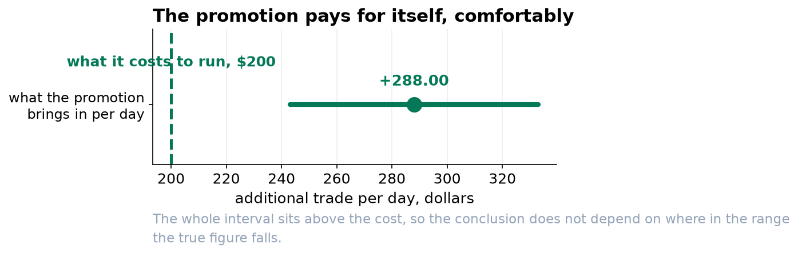

Keep the Promotion. Stop Trusting the Weather Rule.
Two conclusions came out of the same model. One was right all along and one had the sign backwards on hot days.
Recommendation
Keep running the promotion. It brings in about $288 a day against a cost of $200, and we are confident the true figure is somewhere between $243 and $333. Stop using the rule that warmer weather always means a better day. Trade peaks at about 67°F and falls away above it, so on the hottest days the old rule points exactly the wrong way.
What we found about the promotion
This one is straightforward and it did not change no matter how carefully we modeled. Every version of the analysis put the promotion between $288 and $295 a day, comfortably above what it costs. The work we did narrowed the range rather than moving it.

What we found about the weather, which did change
The first model said every degree warmer was worth about $17, all the way up. That is right in the middle of the range and wrong at both ends. What actually happens is that trade climbs steeply as it warms up from freezing, peaks around 67 degrees, and then declines. Above the peak each further degree costs roughly $15.
If you staff and stock for a heatwave expecting a rush, you are planning against the old rule. Our best estimate is that a 90-degree day trades about $300 below a 67-degree one, not above it.

Two other things worth knowing
- A festival day is worth about $2,340 more than an ordinary day. We found this while checking whether a handful of unusual days were distorting the model. They were, and the right response was to account for them rather than set them aside, which turned a nuisance into a number worth planning around.
- Busy days are less predictable than quiet ones. The spread of our error on a quiet day is around $100; on the busiest days it is three times that. Any forecast we give you should carry a wider margin at the top end, and a single average margin would understate the risk on exactly the days that matter most.
What this analysis cannot tell you
It measures what happened on days the promotion ran against days it did not, over three years in one location. It does not say whether a different discount would do better, whether the effect would hold if the promotion ran every day, or whether the temperature pattern is really about temperature rather than about what else people do in hot weather. The festival figure rests on six days, which is enough to be worth knowing and not enough to be precise.